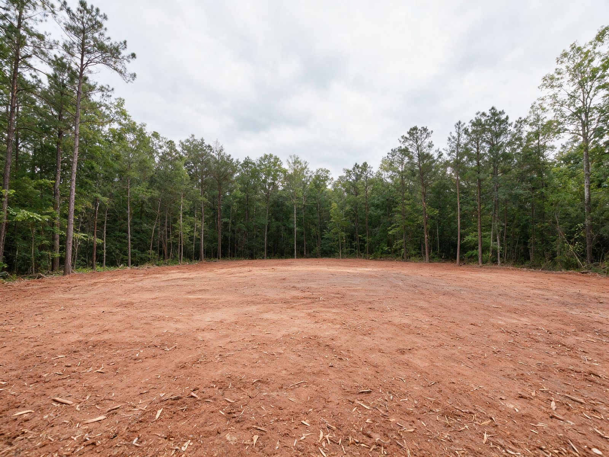
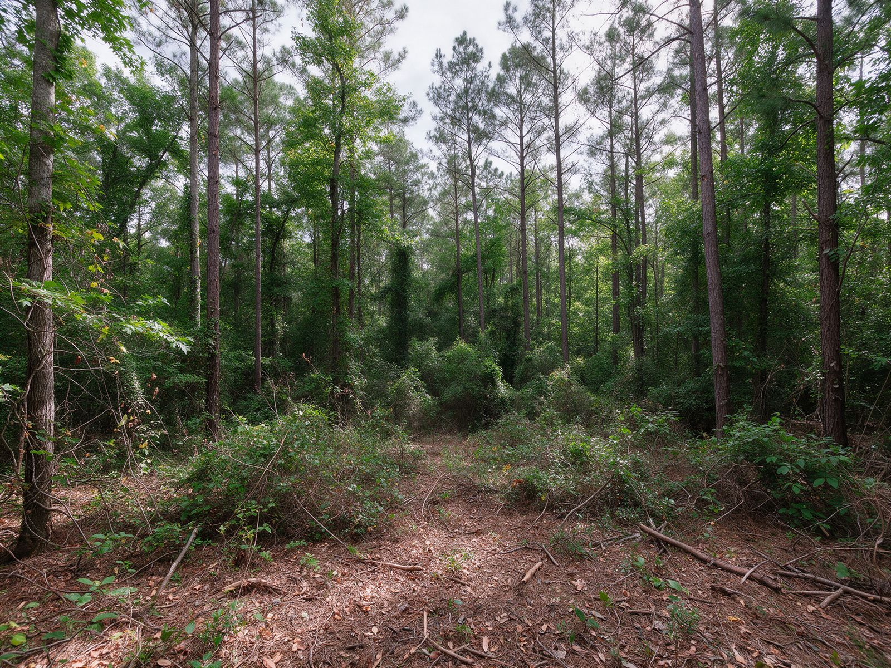

Pasture & Field Reclamation in Charlotte, NC
Leave a Piedmont field alone for five years and it starts turning back into forest. Eastern red cedar, sweetgum, and loblolly pine seed in first, briars fill the gaps, and the fence rows grow into tree lines. Before long, a pasture that once fed horses or cattle is a young woodlot.
We reclaim those fields with a forestry mulcher, grinding the encroaching trees and brush into the ground so the land is open, level enough to mow, and ready for you to lime, seed, and put back to work.
- Cedar, sweetgum & pine mulched
- Fence rows opened back up
- Field left ready to reseed
Get a Free Pasture Reclamation Estimate
Tell us how long the field's been idle and what you want to use it for. We'll call within one business day.
Thanks, we've got it.
Thanks for the details. We'll call within one business day to set up a time to walk the field.
Sorry, your request didn't go through. Please call (828) 576-3931 or email patrick@landclearingcharlotte.com.
- Owner on Every JobHe walks the field and runs the machine
- Licensed & InsuredCertificates provided on request
- Free On-Site EstimatesWe look at the field and fences together
- Mow-Ready FinishLow stumps, mulch spread evenly
What Our Pasture Reclamation Process Is
Getting a field back is about more than knocking trees down. These four steps leave ground you can actually mow, seed, and fence.
-
01
Read the Field
We walk the field's old edges, find the fence lines, and note the wet spots, rock, and any trees you want to keep for shade.
-
02
Set the Edges
We agree where the open ground stops and the woods begin, and which fence rows get opened up.
-
03
Mulch It Back
Encroaching cedar, sweetgum, pine, and briars are ground down and the mulch is spread thin across the field.
-
04
Ready for Seed
You get a walk-through and our notes on low spots or leftover stumps worth knowing about before you seed.
Where We Serve for Pasture Reclamation
We reclaim fields across south and east Mecklenburg and the neighboring counties. Town pages are coming. Start with the main forestry mulching page in the meantime.
Bringing Charlotte-Area Fields Back Into Use
Where We See the Most Overgrown Fields
Charlotte's eastern and southern edges, out past Mint Hill and down toward the Union County line, still have plenty of old farmland. Some fields were cut for hay until a parent or grandparent stopped; others were bought as an investment and left alone. Across the county line, Union County has even more of these tracts. They all follow the same pattern: an open field slowly turns into a young woodlot that's worth less as pasture every year it's left.
Why Cedar, Sweetgum, and Pine Move In
These three trees thrive in open, sunny, disturbed ground. Birds drop red cedar seeds along fence wire, sweetgum spreads from seed and root suckers, and loblolly pine seeds blow in from the nearest tree line. In just a few years they shade out grass and turn a hayfield into something you can't mow. The earlier they're cut back, the easier and cheaper the field is to reclaim.
Fence Rows Are Their Own Job
Old fence rows are often the worst part. Trees grow right through the wire, vines bury the posts, and the row spreads several feet into the field on each side. We can mulch a fence row back to the wire line when you plan to replace the fence, or clear an even strip on each side when the fence is staying. Embedded wire and old posts can damage equipment, so we walk these rows carefully and talk through the plan with you before we start.
Leaving Some Shade Trees
Livestock appreciate a few good shade trees, and a lone white oak in the middle of a pasture is worth keeping. We'll flag the trees you want to leave and mulch around them so they stand clear of the brush.
Reseeding After We Leave
A freshly mulched field has bare spots, thin mulch, and a soil surface that's ready for seed. Most owners take a soil test, lime as needed, and drill or broadcast a pasture mix suited to the season. Red clay fields are often acidic and short on nutrients after years of brush, so ask your local Cooperative Extension office what to plant and when. Getting grass established quickly is the best way to keep cedar and sweetgum from coming right back.
Larger Fields and the Rules
Bigger reclamation jobs can run several acres. North Carolina generally requires an erosion and sedimentation control plan for land disturbance over one acre, and fields that drain to a creek may have Mecklenburg County stream buffers along their edges. Because mulching keeps roots in place and the ground covered, it disturbs less soil than pushing a field with a dozer, but confirm with the city or county what applies to your property. Since nothing is burned, you also avoid the county's tight open-burning restrictions.

Got a field that's gotten away from you?
Tell us what you want it to be again: hay, horses, cattle, or just open land. We'll plan the reclamation around it.
Get My Field EstimateOther Services We Provide in Charlotte
Pasture and field reclamation is one of our eight forestry mulching services in Charlotte. Here's the rest of what we do, grouped by category.
Why Landowners Choose Us to Reclaim Their Fields
A Finish You Can Mow
Stumps are ground low and the mulch is spread thin, so the field can take a mower and a seed drill.
Fence Rows Done Right
We talk through the wire, the posts, and the plan for the fence before we touch a fence row.
Shade Trees Kept
The oaks and other shade trees you want for livestock stay standing while the brush around them goes.
No Burn Piles in the Field
Nothing is pushed into windrows to burn or left to rot. The material goes back into the soil.
Reclaiming a field is about getting land back into production, not just making it look cleared. We think about what happens after we leave, from mowing and seeding to fencing and grazing, and leave the ground in shape for it.
Charlotte Pasture Reclamation FAQs
How long does a field have to sit before it needs reclaiming?
In the Piedmont, cedar, sweetgum, and pine can take hold within a few growing seasons. A field idle for five to ten years usually has trees too big for a bush hog, which is where a forestry mulcher comes in.
Can I just bush hog it instead?
A bush hog handles grass and light brush. Once saplings get thicker than your thumb or the field has young trees, a forestry mulcher is the better tool and won't get hung up on stems.
Will you take out the old fence?
We can mulch the brush and trees growing in and around a fence row. Taking out the old wire and posts themselves is usually a separate job. We'll talk through it during the walk-through.
How soon can I seed after you mulch?
Usually as soon as you're ready and the season is right. Take a soil test first, lime as needed, and ask your local Cooperative Extension office which pasture mix and timing suit your field.
Will the mulch smother new grass?
We spread the mulch thin across open fields to avoid heavy mats. Thin mulch breaks down fairly quickly, and grass seed can establish through it, especially where seed reaches the soil.
Can you leave a few trees for shade?
Yes. Flag the trees you want to keep and we'll clear around them. A few well-placed shade trees are good for livestock.
Do I need a permit to reclaim a field?
It depends on the size and location. Most disturbance over one acre needs an erosion control plan in North Carolina, and creek edges may have buffers. Confirm with the city or county for your property.
Do you work outside Mecklenburg County?
Yes. Much of the farmland we reclaim is on the Mecklenburg edges and into Union and Cabarrus Counties. Tell us where the field is when you request an estimate.
Will the trees come back after mulching?
Some sweetgum and pine sprouting is normal. Getting a good stand of grass established and mowing on a regular schedule is the most effective way to keep a reclaimed field open.
Take back your overgrown land.
Free walk-through and written estimate for forestry mulching in Charlotte.